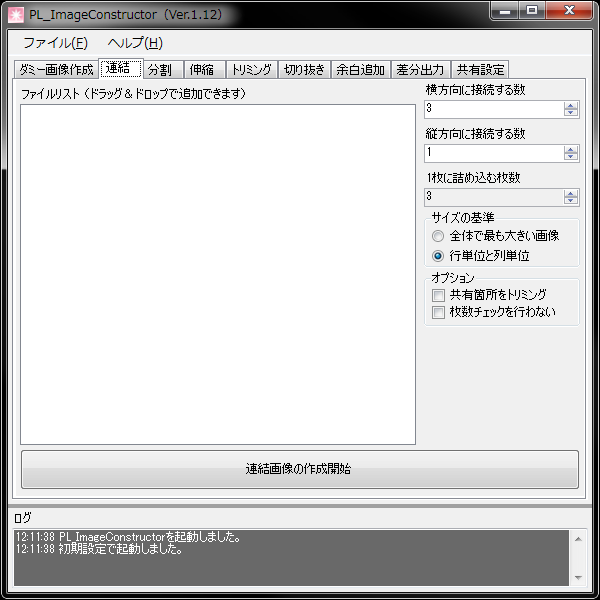

複数のデータをくっつけて1つの画像データにします。
その際、登録した全てのデータを連結するのではなく、3枚ずつなどの指定が可能です。
ゲームのテクスチャ作成や、ゲームエンジン吉里吉里2などで使用されるボタンの画像の作成等に有効です。
- 1枚に詰め込む枚数
“横方向に接続する数 × 縦方向に接続する数”の答えが表示されます。
ユーザが任意で変更する事はできません。
- サイズの基準
詰め込む画像の縦横サイズの基準を決めます。
「行単位と列単位」の場合、縦幅はその行、横幅はその列内で最も大きいものとなります。
- 共有箇所をトリミング
複数の画像の共有部分を比較し、差異のある箇所だけを連結して出力します。
それにより、ゲーム制作で使う、目パチ、口パクなどのデータを作成することができます。
縦横の幅が同じファイルでなければ比較できません。
- 枚数チェックを行わない
実行時に登録された枚数が「1枚に詰め込む枚数」の倍数でない場合は停止しますが、それを無視して処理を行います。